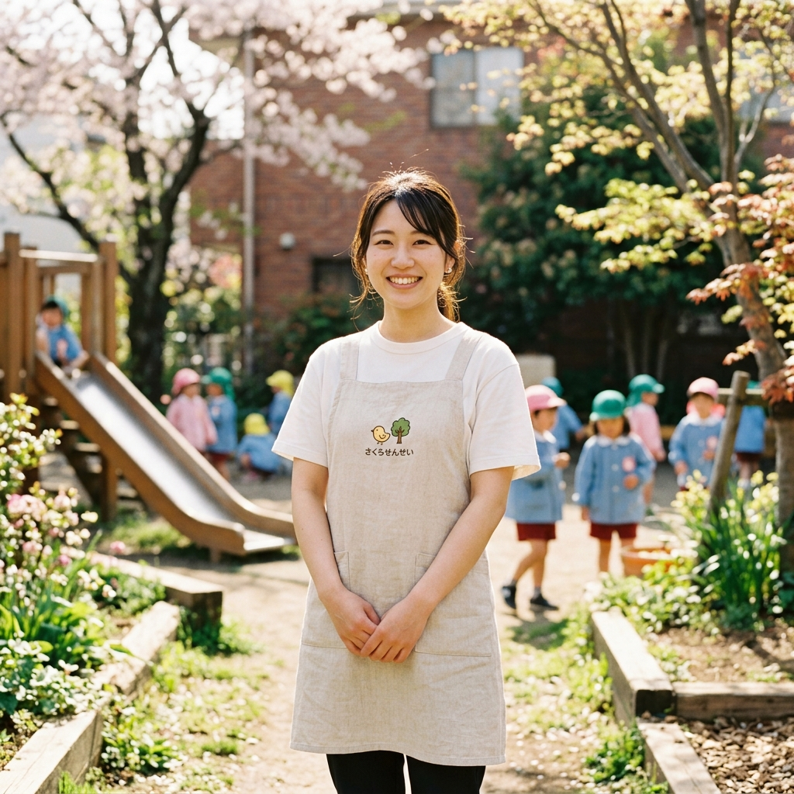

子どもたちの「なんで？」に
答えられなくても大丈夫。
私たちに必要なのは、
正解を教える先生ではなく、
いっしょに泥だらけになって
面白がれる「大人」です。
みどりが丘で、あなた自身も
育っていきませんか。

新人の頃は「完璧な先生」を目指して、毎日カリキュラムに追われていました。でも、ある日園長から「大人が完璧だと、子どもが失敗できなくなるよ」と言われたんです。
それからは、分からないことは「先生も分からないや、一緒に図鑑で調べよう！」と言えるようになりました。肩の力が抜けて、本当に子どもたちと向き合えるようになった気がします。
| 募集職種 | 幼稚園教諭（正社員・パート） |
|---|---|
| 応募資格 | 幼稚園教諭免許状（取得見込み可） ※未経験・ブランクのある方も歓迎します。 |
| 給与・待遇 | 月給 220,000円〜（経験を考慮します） 昇給年1回、賞与年2回、交通費全額支給 |
| 休日・休暇 | 完全週休2日制（土日祝）、夏季・冬季休暇、慶弔休暇、アニバーサリー休暇 |